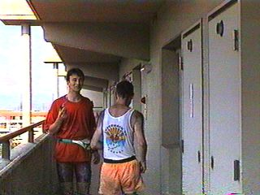

Run #57 - Sunday July 20th at Takanohara.
"Hot Sayonara to the Doggies in Takanohara"
Hare: Dr. Dog Style.
Chinko runs to the finish. A hot day at Nara.
Snoopy runs too as this high speed picture shows.

Roxxx and Slimie leave Dr. Dog's apartment beercheck.
Wanda sleeps at beercheck. It was a really hot day.
Chatting before the Circle. It was hot. I shit thee not.
Lolita rehydrates after running all the checks. Is that sweat? Surely not.
Slimie Limie prepares to be honorable Religion for the day.
Wanda salutes at the On-Home. The joys of rehydration.
Chinko at the On-In 0.25 seconds before he fell asleep.
Dr. Dog Style, hare of the day, and the newly named "Does It With Dogs", both sadly gone off to England for what we hope is a bright future - with an instant family, real cider and a sofa.
Roxxx sticks finger in Slimie's ear.
Roxxx and PeeCock who didn't run 'cause she is still recovering from O-157 poisoning.

Slimie, Roxxx and PeeCock. Modestly pissed.
Slimie in his element.
Slimie Limie (slap-head) self-portrait part 1.
Wanda sliding under table at On-In.
Slimie Limie self-portrait part 2. Practice makes perfect.